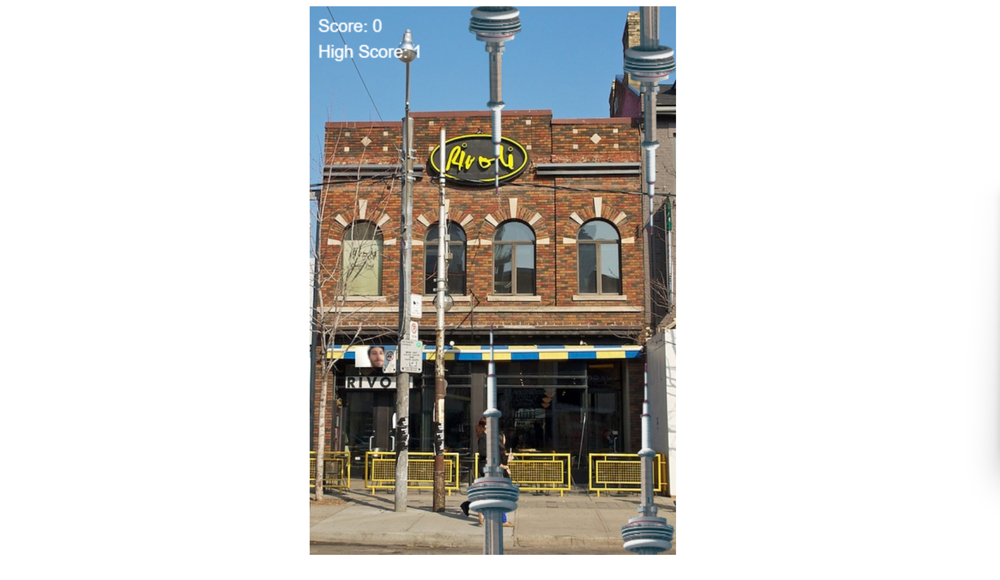

Who I am
I am currently 18 in my first year of college. I am studying to get a Bachelor of Arts in computer science with a minor in film. Computers and cameras have always bene a passion of mine, from a young age I would make little videos on either an iPad or a Sanyo camcorder. I have also been on a computer since I was young, the youngest I can remember programming is 7 years old. The purpose of this website is to showcase a bit of my programming projects, but mostly my photography.
Languages
Projects

Nirvanna the Band the Show the Flappy Game
For my final grade 12 comp sci project I made a Flappy bird clone themed around Nirvanna the Band the Show.

Impractical Clickers
I was joking about making a dumb clicker game with the Impractical Jokers cast with my friend at like 3am. So this was the result of it.

STRIX Robotics
STRIX robotics is the First Robotics team at KSS. When I joined the team, they we're orginally using a Weebly page. I felt that it needed a total overhaul, so I made a new site from the ground up using some old images as well.